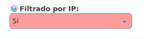

Security elements¶
Firewall¶
IvozProvider does not currently include a firewall but...
Danger
We strongly encourage any production installation to implement a firewall to protect the platform from the wild Internet.
The protection method could be:
- Local firewall based on iptables
- External firewall
- Both
Exposed ports/services¶
These are the ports IvozProvider needs to expose to work properly:
SIP signalling:
- Port 5060 (TCP/UDP)
- Port 5061 (TCP)
- Port 7060 (TCP/UDP) y 7061 TCP (just in case both ProxyUsers and ProxyTrunks share IP)
RTP audioflow:
- Port range 13000-19000 UDP
Web portal and provisioning:
- Ports TCP 443, 1443 y 2443
Hint
We recommend using iptables geoIP module to drop connections from countries where we don’t have any users.
Authorized company IP ranges¶
During the Company creating process, we skipped the security mechanism that limits the IP addresses or ranges that the company terminals can use in their terminals.
This can be activated in the section Brand configuration > Company:
Rest of the users won’t be allowed to connect from another network, even if the credentials are valid.
Warning
Once the filter has been activated you MUST add networks or valid IP addresses, otherwise, all the calls will be rejected.

Both IP addresses or ranges can be used, in CIDR format (IP/mask):

Important
This mechanism limits the origin of the users of a company, it doesn’t filter origin from Contract Peerings.
Roadwarrior users¶
Some companies have roadwarrior users that travel often and connect from external networks, forcing Companies to disable the IP filter security mechanism.
To solve this issue, there is a user option called Calls for non-granted IPs that enables these users to call from non-granted IPs while their companies are still protected with IP filter mechanism.
When users like theese call from non-granted IPs, their amount of concurrent outgoing calls are limited to 1, 2 or 3 to avoid being a security breach.
Warning
Only calls generated by this kind of user (both internals and externals) are counted and limited, received calls are not affected by this setting (they are controlled with MaxCalls setting).
To sum up, with this feature:
- There are users that are allowed to make a fixed amount of calls from non-granted IPs.
- This calls from non-granted IPs are counted and limited.
Example 1 - Company without IP check
It doesn’t matter if the user is allowed to make calls from non-granted IPs, as there are no non-granted IPs.
Example 2 - Company with IP check
- If the user is calling from one of the allowed IPs, it doesn’t matter if the user is allowed to make calls from non-granted IPs: this calls are not counted nor limited.
- If the user is NOT calling from one of the allowed IPs, it is verified the amount of calls that this user is allowed to make. If the user is allowed to make calls from non-granted IPs and has not exceeded his limit, the call is granted and counted.
Note
If Calls for non-granted IPs is set to None the user must fulfill the IP policy of his company.
Anti-flooding¶
IvozProvider comes with an anti-flooding mechanism to avoid that a single sender can deny the platform service by sending lots of requests. Both proxies (users and trunks) use this mechanism, that limits the number of requests from an origin address in a time lapse.
Warning
When an origin reaches this limit, the proxy will stop sending responses for a period of time. After this time, the requests will be again handled normally.
Some origins are automatically excluded from this anti-flooding mechanism:
- Application Servers from the platform.
- Company authorized IP addresses or ranges (see previous section).
Global operator of the platform can also add exceptions to this mechanism in the section Global configuration > Antiflood trusted IPs.

Concurrent call limit¶
This mechanism limits the number of concurrent external calls for a company/retail account. It can also be configured at brand level.
Warning
Brand and company/retail limits are not related anyhow. The one that is reached first will prevent new calls.
Tip
To disable this mechanism, set its value to 0.